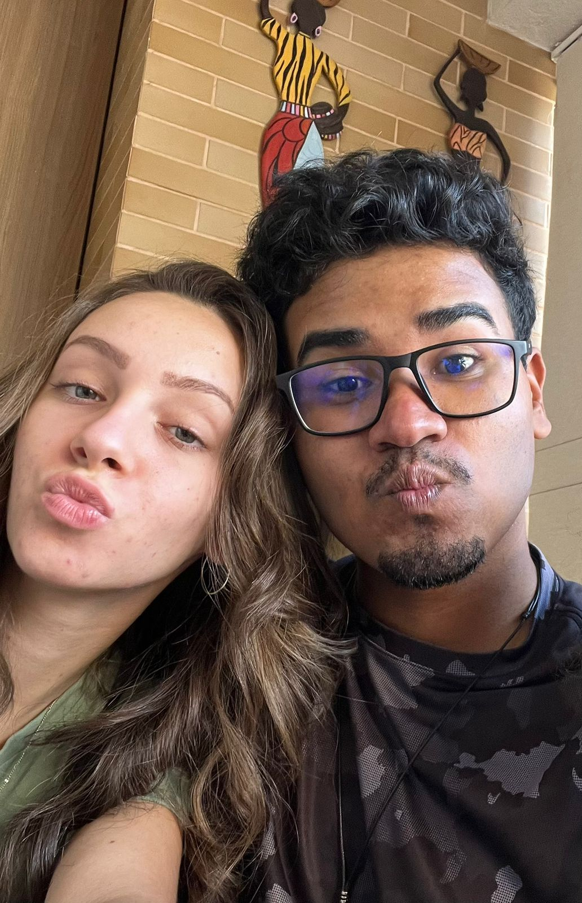
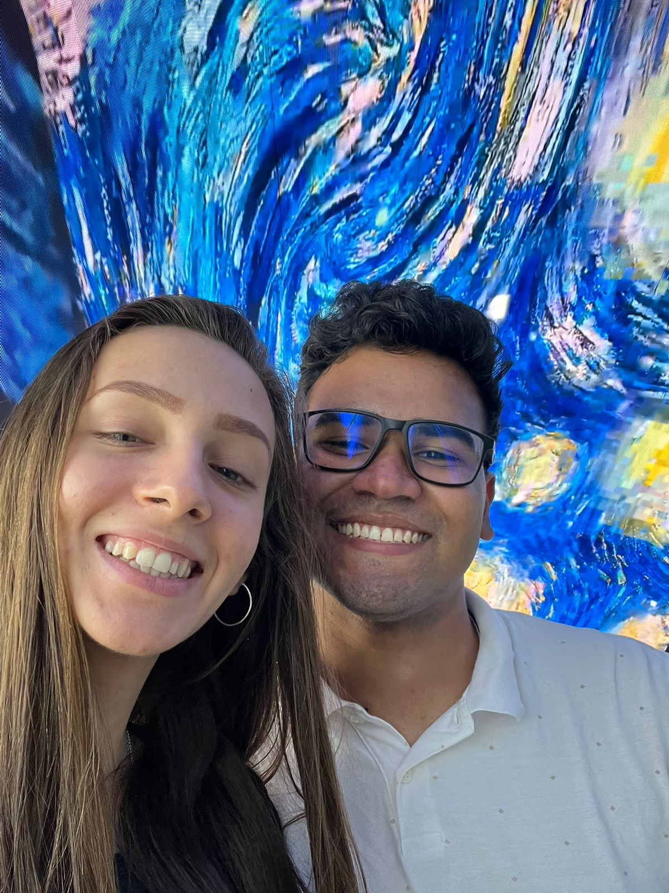
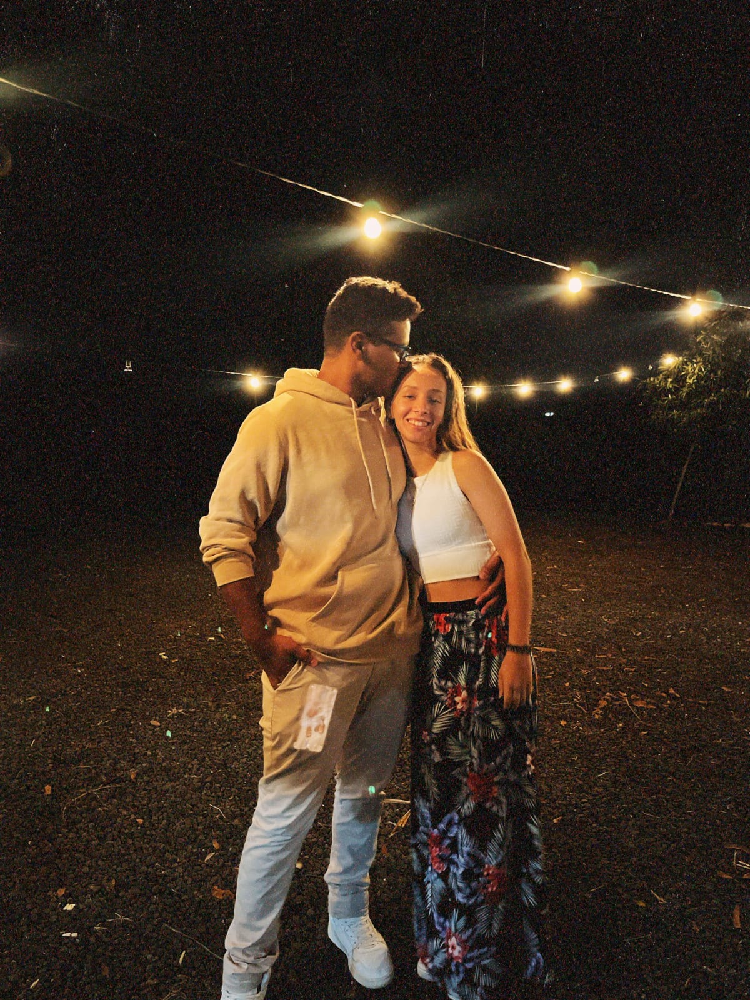
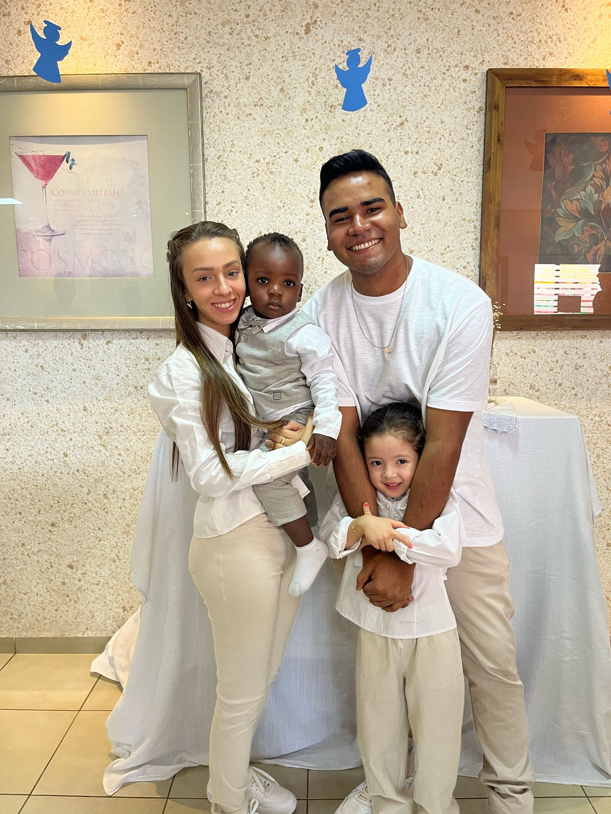
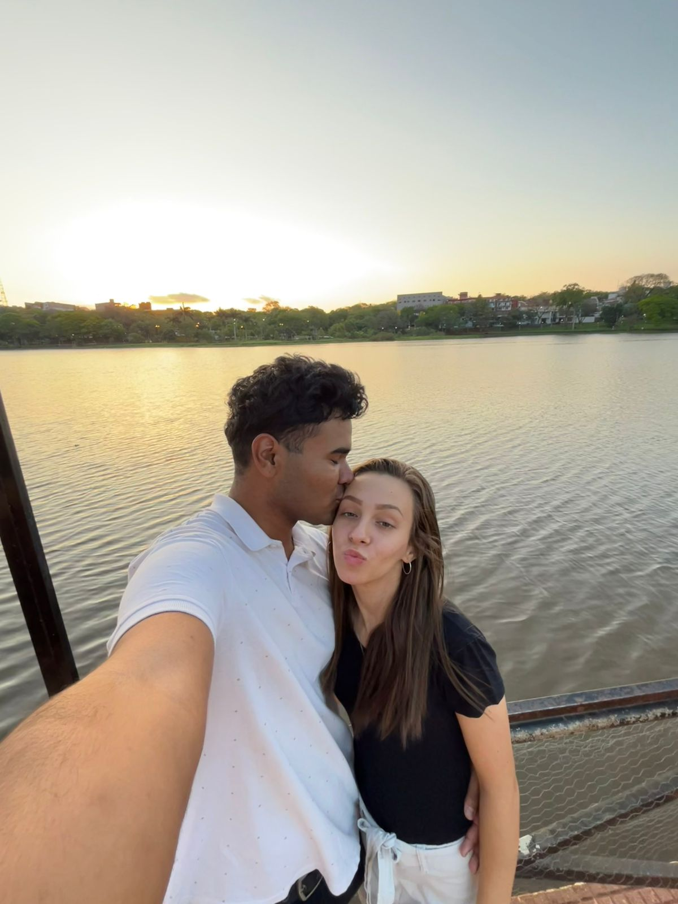
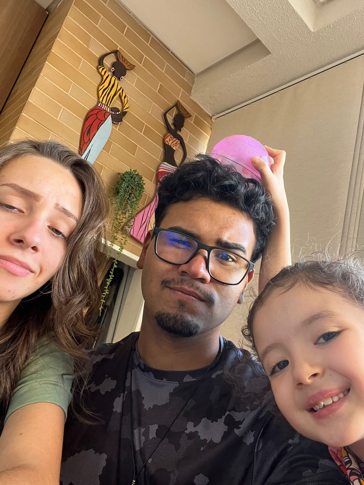

❤️Minha Pequena❤️
Bom... o que falar de uma mulher tão incrível? Você é tão esforçada, organizada, cuidadosa, responsável… uma mulher excepcional. E eu sou extremamente grato por ter você comigo. O tanto de coisa que passamos e obviamente ainda estamos e vamos passar não me faz te amar menos. Pelo contrário, me faz te querer mais, querer lutar, querer mudar pela gente. Você me mostra um norte que eu devo seguir, priorizando o agora, mas sem deixar de pensar no futuro. Acha que eu não vou me gabar da mulher que tenho? Pô, amor, você é a dele dele ksksksk. Mas não é só por isso. Olha só as coisas que você já fez e ainda faz, sempre dando o seu máximo em tudo e deixando a sua marca por onde passa. E isso é difícil de se fazer. Eu já falei, mas volto a repetir: você é uma luz que brilha tanto… só que, às vezes, você não percebe o quanto brilha e o quanto é importante para as pessoas ao seu redor. Então não se esqueça amor, você não está sozinha. Eu estou com você, mesmo longe, porque é tão gostoso estar na sua companhia. Nós sabemos que não dá vontade de se desgrudar. A sua risada em um simples áudio já me alegra de uma forma absurda. E ter a mulher mais bonita ao meu lado é algo realmente surreal. Eu não sou um homem muito bom com as palavras, e peco muito em minhas ações. Mas, com você, mesmo nas situações difíceis, você sempre me fez ver que eu posso ser alguém melhor. Então obrigado por ser essa mulher incrível. Se hoje eu tenho um sonho, ele tem nome, sorriso e um brilho nos olhos. E esse sonho é você. A minha mulher. A minha futura esposa. A minha princesinha. O meu eterno amor. Eu te amo muito mesmo. ❤️ Feliz Dia das Mulheres ❤️
❤️Alguns Fotinhas nossa e suas que eu amo❤️
💌 Cada foto tem uma pequena parte de algo que eu quero te dizer.








